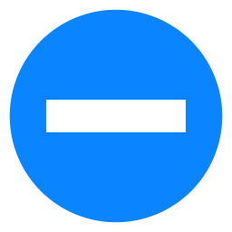

Mouse&Keyboard Bridge
One mouse and keyboard for your Mac and your Windows PC.
Download
Get the installer for each computer from the latest release.
DownloadGetting started
- Install the app on both computers. They must be on the same Wi-Fi or local network.
- On the Mac, allow the app under System Settings → Privacy & Security → Accessibility, then open it again.
- Click Scan for Devices, then Connect next to the other computer, and click Allow on that computer. Or type the same six-digit pairing code on both.
- Drag the other screen on the arrangement board to where it sits on your desk, then click Apply.
- Turn on Start at login so the computers reconnect after every restart.
Common questions
The cursor does not cross to the other computer. Check that both windows show "Connected", and that the other screen is placed on the correct side of the arrangement board.
Typing does nothing on the Mac. The Accessibility permission is missing or was granted to an older copy. Remove the entry in System Settings, add the app again and restart it.
The devices do not find each other. Allow the app through the Windows firewall for private networks, or enter the other computer's IP address under Advanced.
Contact
Report a problem or ask a question. Please include your macOS and Windows versions.
Contact support